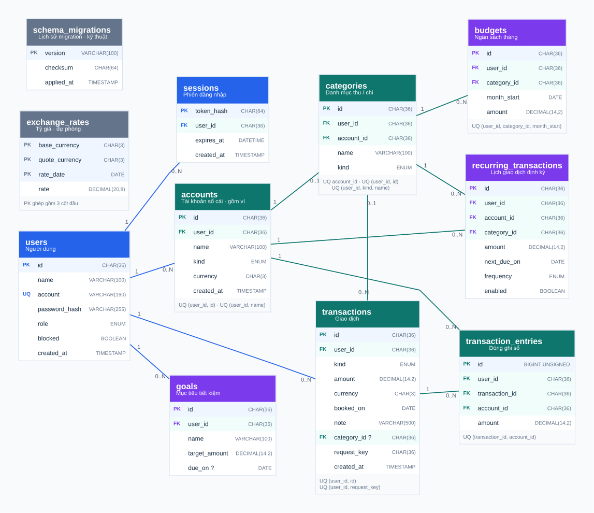

Bấm vào ảnh để mở lớn. Các ảnh UC, Activity và Sequence đều lấy từ sources/design.
Danh mục Use Case và liên kết thiết kế
Nguồn yêu cầu: UC.docx của nhóm. Trạng thái mã: main / HEAD 7e47d99, đã fetch và đối chiếu với GitHub ngày 21/10/2026. Chưa chạy ứng dụng để xác nhận nghiệp vụ. Giữ 19 mã UC01, UC03–UC20; không tự tạo UC02.
| UC | Tác nhân | Mục tiêu | UR/SR theo bảng gốc | Dữ liệu cần đọc/ghi | API có trong mã | Trạng thái và phần còn thiếu |
|---|---|---|---|---|---|---|
| UC01 | Người dùng | Đăng ký/Đăng nhập | UR-F10, SR-F01, SR-F02 | users, sessions | POST /api/auth/register; POST /api/auth/login; POST /api/auth/logout; GET /api/auth/me | Một phần: Đã có xác thực/phiên; chưa có 2FA. |
| UC03 | Người dùng | Quản lý tài khoản tiền | UR-F02, SR-F03 | accounts (kind=wallet) | GET/POST /api/wallets | Một phần: Có tạo và xem ví/số dư; chưa có sửa, ngừng sử dụng. |
| UC04 | Người dùng | Quản lý danh mục thu/chi | UR-F02, SR-F03 | categories, accounts | GET/POST /api/categories | Một phần: Có tạo và xem; chưa có sửa, ngừng sử dụng. |
| UC05 | Người dùng | Ghi nhận giao dịch thu/chi | UR-F01, SR-F04 | transactions, transaction_entries, accounts, categories | POST /api/transactions | Đã có mã luồng chính: Thu/chi/chuyển tiền VND, hai dòng đối ứng, chống gửi trùng. Chưa có đa tiền tệ. |
| UC06 | Người dùng | Tra cứu lịch sử giao dịch | UR-F01, UR-F09, SR-F07 | transactions, transaction_entries, categories, accounts | GET /api/finance | Một phần: Có kỳ và tìm kiếm; lịch sử tối đa 200 dòng, chưa có phân trang đầy đủ. |
| UC07 | Người dùng | Hủy hoặc điều chỉnh giao dịch | UR-F01, SR-F08 | transactions, transaction_entries; còn thiếu liên kết đảo/thay thế | Chưa có API | Cần bổ sung: Chưa có liên kết reversal/correction trong schema, chưa có chức năng đảo/thay thế. |
| UC08 | Người dùng | Quản lý ngân sách | UR-F04, SR-F13–14 | budgets, categories | GET/POST /api/budgets | Một phần: Có xem/đặt/cập nhật ngân sách theo danh mục chi và tháng; chưa có ngưỡng cấu hình. |
| UC09 | Người dùng | Nhận cảnh báo ngân sách | UR-F04, SR-F14–15 | budgets; chưa có lưu thông báo/cảnh báo | Chưa có API cảnh báo | Cần bổ sung: Trang thông báo có dữ liệu mẫu; chưa có lịch sử cảnh báo thật. |
| UC10 | Người dùng | Quản lý khoản đăng ký định kỳ | UR-F05, SR-F16 | recurring_transactions | Chưa có API trong cây đã kiểm tra | Có bảng nền: Có cấu trúc quy tắc; chưa có scheduler/quy trình CRUD hoàn chỉnh. |
| UC11 | Người dùng | Nhận nhắc nhở thanh toán | UR-F05, SR-F17 | recurring_transactions; chưa có lịch sử gửi | Chưa có API/scheduler | Cần bổ sung: Chưa có nơi lưu kết quả gửi để chống nhắc trùng. |
| UC12 | Người dùng | Xem đề xuất khoản đăng ký định kỳ | UR-F05, SR-F18 | transactions + đề xuất định kỳ chưa có bảng | Chưa có API | Cần bổ sung: Chưa có thuật toán, tiêu chí phát hiện hoặc dữ liệu đề xuất. |
| UC13 | Người dùng | Xem giá trị quy đổi ngoại tệ | UR-F06, SR-F11–12 | exchange_rates | Chưa có API quy đổi | Có bảng nền: Ghi sổ hiện khóa VND; chưa lưu snapshot tỷ giá giao dịch. |
| UC14 | Người dùng | Xem dashboard | UR-F07, SR-F20 | accounts, transaction_entries, transactions, budgets | GET /api/finance; GET /api/wallets | Một phần: Có tổng hợp và số dư; chưa có mô hình nợ để khẳng định tài sản ròng đầy đủ. |
| UC15 | Người dùng | Quản lý mục tiêu tài chính | UR-F08, SR-F19, SR-F21 | goals | GET/POST /api/goals | Một phần: Có tạo/xem tên, số tiền đích và hạn; chưa có tích lũy, phân bổ, kết thúc. |
| UC16 | Người dùng | Xem báo cáo thu/chi | UR-F09, SR-F22 | transactions, categories, transaction_entries | GET /api/finance | Đã có mã luồng chính: Có tổng/breakdown theo kỳ; kiểm tra tối đa 366 ngày; chưa xác nhận chạy trong lượt này. |
| UC17 | Người dùng | So sánh tài chính giữa các kỳ | UR-F03 — chưa có SR tương ứng | Truy vấn tổng hợp transactions, không bắt buộc bảng mới | Chưa có luồng so sánh riêng | Cần bổ sung: UR-F03 còn thiếu SR tương ứng; đổi kỳ chưa đồng nghĩa so sánh kỳ. |
| UC18 | Người vận hành / Nhà cung cấp tỷ giá | Đồng bộ tỷ giá | SR-F10 | exchange_rates | Chưa có đồng bộ thật | Có bảng nền: Bảng tỷ giá dự phòng; thao tác quản trị vẫn mô phỏng. |
| UC19 | Bộ lập lịch / Người vận hành | Sao lưu dữ liệu | SR-F24 | Chưa có dữ liệu sao lưu; schema_migrations chỉ ghi phiên bản schema | Chưa có backup thật | Cần bổ sung: Chưa có tác vụ tạo file/lưu trạng thái sao lưu. |
| UC20 | Người vận hành được cấp quyền | Khôi phục dữ liệu | SR-F25 | Chưa có dữ liệu phục vụ quy trình khôi phục | Chưa có restore thật | Cần bổ sung: Cần quyền vận hành, xác nhận và kiểm tra phục hồi riêng. |


Cách dùng khi thiết kế một màn hình
- Chọn mã UC từ bảng này; xác định mục tiêu và actor.
- Đọc luồng chính, điều kiện và lỗi trong tài liệu UML.
- Đối chiếu bảng/cột trong ERD và từ điển dữ liệu; không suy ra quyền sở hữu từ tên trường đơn thuần.
- Xác định API đã có và phần thiếu; chỉ mở rộng dữ liệu sau khi chốt nghiệp vụ.
- Kiểm tra đủ nhánh bằng ví dụ và kết quả dữ liệu mong đợi.
Lưu ý khi đọc ảnh gốc
- Actor ngân sách/định kỳ trong bảng UC là Người dùng; một số ảnh gốc còn ghi Tour Guide. Ảnh được giữ nguyên để nhóm đối chiếu.
- UC13 là quy đổi ngoại tệ; ảnh UC13 gốc trùng UC12. UC14 là dashboard; ảnh UC14 gốc đang ghi nhắc định kỳ.
- Tên nhóm ghi chi–cảnh báo chuẩn hóa là UC05 + UC08/UC09; tên file gốc UC6-9 vẫn được giữ trong sources để đối chiếu.
- Dùng ngừng sử dụng cho ví/danh mục theo bảng UC; không tự suy ra xóa vật lý.
- Không vẽ tạo/xem/sửa/xóa bằng include như thể một lần quản lý phải luôn chạy đủ bốn thao tác.
- UC09 chỉ mở rộng sau ghi chi thành công khi đạt/vượt ngưỡng. UC08 là cấu hình dùng trước, không bắt buộc gọi lại mỗi lần ghi chi.
- UC13 đọc tỷ giá đã có; UC18 đồng bộ là tác vụ riêng.
- Vai trò Người vận hành cho UC18–UC20 được chuẩn hóa đề xuất; chính sách quyền chi tiết cần nhóm chốt.
UML gốc của nhóm
Ảnh dưới đây lấy trực tiếp từ sources/design/Diagram, không vẽ lại. Mô tả giúp đọc và đối chiếu thiết kế gốc với mã hiện tại.
Bảng Use Case gốc · Danh mục UC và API · ERD và dữ liệu
Tra cứu nhanh
| Nghiệp vụ | Activity gốc | Sequence gốc |
|---|---|---|
| UC05 kết hợp UC08/UC09 | Mở ảnh | Mở ảnh |
| UC07 | Mở ảnh | Mở ảnh |
| UC11, sử dụng dữ liệu UC10 | Mở ảnh | Mở ảnh |
| UC16 | Mở ảnh | Mở ảnh |


1. Ghi khoản chi và cảnh báo ngân sách
Phạm vi: UC05 kết hợp UC08/UC09.
Luồng nghiệp vụ: Nhập khoản chi → kiểm tra dữ liệu → lưu → cập nhật mức sử dụng ngân sách → xét ngưỡng → thông báo hoặc hiển thị thành công.
Các thành phần phối hợp: Client gửi khoản chi tới phần giao dịch; phần giao dịch lưu dữ liệu rồi yêu cầu phần ngân sách kiểm tra. Phần ngân sách đọc cấu hình, gửi và lưu lịch sử cảnh báo khi thỏa điều kiện.
Điểm cần đối chiếu: Tên file gốc ghi UC6-9, nhưng Main UC trong UC.docx mô tả UC05 + UC09, dùng cấu hình UC08. Activity ghi vượt ngưỡng, còn bảng UC và Sequence ghi đạt/vượt; nhóm cần chốt điều kiện bằng đúng ngưỡng. Mã hiện có luồng ghi sổ, chưa có gửi cảnh báo thật.
Activity
Sequence
2. Hủy hoặc điều chỉnh giao dịch
Phạm vi: UC07.
Luồng nghiệp vụ: Chọn giao dịch → kiểm tra quyền/hiệu lực → chọn hủy hoặc nhập nội dung sửa → kiểm tra dữ liệu → xác nhận → ghi bút toán đảo → nếu sửa thì ghi giao dịch thay thế → liên kết và lưu đồng thời → trả kết quả; lưu lỗi thì hoàn tác.
Các thành phần phối hợp: Người dùng → Giao diện → Bộ xử lý giao dịch → Database. Bộ xử lý lấy giao dịch gốc, kiểm tra quyền/dữ liệu rồi ghi bản đảo và phần thay thế nếu có.
Điểm cần đối chiếu: Activity có nhánh không xác nhận và lỗi lưu/hoàn tác, còn Sequence chưa thể hiện riêng đầy đủ các nhánh này. Schema và API hiện chưa có nghiệp vụ đảo/thay thế; ảnh thể hiện thiết kế đích của nhóm.
Activity

Sequence

3. Nhắc khoản thanh toán đến hạn
Phạm vi: UC11, sử dụng dữ liệu UC10.
Luồng nghiệp vụ: Đến thời điểm kiểm tra → lấy khoản còn hoạt động và lịch nhắc → lọc khoản đến hạn, chưa gửi thành công → tạo nội dung → gửi → ghi nhận kết quả.
Các thành phần phối hợp: NhacNhoController lấy danh sách từ Database, tạo nội dung gửi Client và lưu kết quả/thời gian; ảnh cũng có phần ghi nhận lỗi.
Điểm cần đối chiếu: Bảng Main UC nêu bộ lập lịch và dịch vụ thông báo, nhưng Sequence gốc chưa tách rõ hai thành phần này hoặc các nhánh thành công/thất bại. Mã mới có bảng recurring_transactions, chưa có scheduler/lịch sử gửi đầy đủ.
Activity
Sequence
4. Xem báo cáo thu chi theo kỳ
Phạm vi: UC16.
Luồng nghiệp vụ: Chọn kỳ → kiểm tra khoảng thời gian → lấy giao dịch → nếu rỗng thì thông báo; nếu có thì tính tổng thu, tổng chi và chênh lệch → hiển thị.
Các thành phần phối hợp: Người dùng → Giao diện → Báo cáo Controller → Database. Controller kiểm tra khoảng thời gian/bộ lọc, lấy dữ liệu, xử lý rỗng và trả kết quả tổng hợp.
Điểm cần đối chiếu: Mã hiện có GET /api/finance và hàm finance. Transfer được loại khỏi tổng thu/chi. Từ khóa q lọc danh sách lịch sử, còn tổng/breakdown vẫn tính toàn kỳ; lịch sử hiện tối đa 200 dòng.
Activity

Sequence

Phần đăng nhập 2FA
UC.docx có đề cập thiết kế đăng nhập 2FA trong Main UC, nhưng bộ Diagram hiện chưa có cặp Activity–Sequence tương ứng. Đăng nhập/phiên đã có mã; 2FA chưa được hiện thực. Không bổ sung một sơ đồ tự tạo vào bộ ảnh gốc.
Từ điển dữ liệu và ERD hiện có
Nguồn: origin/main 7e47d999411209f165e803d0addf3346e357917a đã được kéo về main; cùng phiên bản với HEAD đang mở. Đây là đối chiếu mã, chưa kết nối cơ sở dữ liệu để xác nhận các bảng đã được tạo.
ERD thể hiện 10 bảng nghiệp vụ trong schema.sql và bảng kỹ thuật schema_migrations trong script setup. Không có khóa ngoại cho exchange_rates hoặc schema_migrations.
ERD · Quản lý thu chi cá nhân
11 bảng · 11 khóa ngoại · MySQL / MariaDB

Khóa ghép giữ dữ liệu cùng chủ sở hữu. categories.account_id là duy nhất nên một account chỉ gắn tối đa một category. Hai bảng màu xám không có khóa ngoại; exchange_rates dành cho mở rộng sau này.
Quan hệ bảng từ schema hiện tại
ERD dưới đây được vẽ theo schema của dự án. Xem bảng quan hệ bên dưới để đọc đầy đủ các cặp khóa ngoại ghép; từ điển dữ liệu giữ chi tiết kiểu ENUM và ràng buộc.
| Bảng cha | Bảng con | Khóa liên kết | Quan hệ |
|---|---|---|---|
| users | sessions | user_id | 1 → 0..N |
| users | accounts | user_id | 1 → 0..N |
| accounts | categories | user_id,account_id | 1 → 0..1 |
| users | transactions | user_id | 1 → 0..N |
| categories | transactions | user_id,category_id | 0..1 → 0..N |
| transactions | transaction_entries | user_id,transaction_id | 1 → 0..N |
| accounts | transaction_entries | user_id,account_id | 1 → 0..N |
| categories | budgets | user_id,category_id | 1 → 0..N |
| users | goals | user_id | 1 → 0..N |
| accounts | recurring_transactions | user_id,account_id | 1 → 0..N |
| categories | recurring_transactions | user_id,category_id | 1 → 0..N |
Xem mã ERD Mermaid
erDiagram
users ||--o{ sessions : "user_id"
users ||--o{ accounts : "user_id"
accounts ||--o| categories : "user_id,account_id"
users ||--o{ transactions : "user_id"
categories o|--o{ transactions : "user_id,category_id"
transactions ||--o{ transaction_entries : "user_id,transaction_id"
accounts ||--o{ transaction_entries : "user_id,account_id"
categories ||--o{ budgets : "user_id,category_id"
users ||--o{ goals : "user_id"
accounts ||--o{ recurring_transactions : "user_id,account_id"
categories ||--o{ recurring_transactions : "user_id,category_id"
exchange_rates {
char base_currency PK
char quote_currency PK
date rate_date PK
}
schema_migrations {
varchar version PK
}Quy tắc phải giữ khi thiết kế
- accounts là tài khoản sổ cái: wallet, income, expense, equity. Ví là tập con kind=wallet; mỗi danh mục gắn một tài khoản đối ứng duy nhất.
- transaction_entries.amount là số có dấu; tổng hai dòng mỗi giao dịch được hàm postTransaction ghi bằng 0. SQL không có CHECK tổng nhiều dòng và không ép một giao dịch luôn có đúng hai dòng.
- Vì SQL chỉ có FK, ERD vật lý ghi transactions 1 — 0..N transaction_entries; luồng nghiệp vụ hiện ghi đúng hai dòng trong cùng transaction DB.
- Khóa ngoại ghép (user_id, id) giữ tài khoản, danh mục và dòng sổ cùng chủ. user_id trong budgets/categories/recurring/entries không phải FK trực tiếp tới users; quyền sở hữu được ràng buộc qua các FK ghép.
- categories.account_id UNIQUE: một account có 0 hoặc 1 category, mỗi category có đúng 1 account. Bảng accounts không chỉ chứa ví.
- transactions.category_id NULL cho transfer; bắt buộc có danh mục cho income/expense. Chuyển tiền không tính vào tổng thu/chi.
- Không có wallet_id/target_id trong transactions: ví nguồn và ví nhận được biểu diễn qua transaction_entries. Các tên walletId/targetId là trường đầu vào API.
- Số dư ví là SUM(transaction_entries.amount), không có cột balance riêng.
- Hiện accounts và transactions bị CHECK currency=VND. exchange_rates chưa được gắn FK vào giao dịch hoặc dùng để ghi sổ đa tiền tệ.
- budgets: UNIQUE(user_id, category_id, month_start), số tiền >0 và ngày phải là đầu tháng. API chỉ cho danh mục expense của chính người dùng.
- goals chưa có số tiền đã tích lũy hoặc bảng phân bổ; không thể suy ra tiến độ mục tiêu từ target_amount.
- sessions lưu token_hash, không lưu token thô. users.password_hash là mật khẩu đã băm; chưa có trường 2FA trong schema.
- Không tự thêm khóa users tới categories/budgets/recurring/entries vào ERD vật lý khi schema không khai báo FK đó.
- Không sửa schema gốc đã áp dụng; thay đổi thiết kế cơ sở dữ liệu cần migration mới.
users — Người dùng
Nguồn: schema của dự án.
| Cột | Kiểu SQL | Khóa và NULL |
|---|---|---|
| id | CHAR(36) | PK, NOT NULL |
| name | VARCHAR(100) | NOT NULL |
| account | VARCHAR(190) | UNIQUE, NOT NULL |
| password_hash | VARCHAR(255) | NOT NULL |
| role | ENUM('user', 'admin') | NOT NULL |
| blocked | BOOLEAN | NOT NULL |
| created_at | TIMESTAMP | NOT NULL |
sessions — Phiên đăng nhập
Nguồn: schema của dự án.
| Cột | Kiểu SQL | Khóa và NULL |
|---|---|---|
| token_hash | CHAR(64) | PK, NOT NULL |
| user_id | CHAR(36) | tham gia FK, NOT NULL |
| expires_at | DATETIME | NOT NULL |
| created_at | TIMESTAMP | NOT NULL |
FK (user_id) → users(id) ON DELETE CASCADE.
accounts — Ví và tài khoản sổ cái
Nguồn: schema của dự án.
| Cột | Kiểu SQL | Khóa và NULL |
|---|---|---|
| id | CHAR(36) | PK, NOT NULL |
| user_id | CHAR(36) | tham gia FK, NOT NULL |
| name | VARCHAR(100) | NOT NULL |
| kind | ENUM('wallet', 'income', 'expense', 'equity') | NOT NULL |
| currency | CHAR(3) | NOT NULL |
| created_at | TIMESTAMP | NOT NULL |
UNIQUE ghép hoặc đơn: (user_id, id).
UNIQUE ghép hoặc đơn: (user_id, name).
FK (user_id) → users(id) ON DELETE CASCADE.
categories — Danh mục thu/chi
Nguồn: schema của dự án.
| Cột | Kiểu SQL | Khóa và NULL |
|---|---|---|
| id | CHAR(36) | PK, NOT NULL |
| user_id | CHAR(36) | tham gia FK, NOT NULL |
| account_id | CHAR(36) | tham gia FK, NOT NULL |
| name | VARCHAR(100) | NOT NULL |
| kind | ENUM('income', 'expense') | NOT NULL |
UNIQUE ghép hoặc đơn: (user_id, id).
UNIQUE ghép hoặc đơn: (user_id, kind, name).
UNIQUE ghép hoặc đơn: (account_id).
FK (user_id, account_id) → accounts(user_id, id) ON DELETE CASCADE.
transactions — Đầu giao dịch
Nguồn: schema của dự án.
| Cột | Kiểu SQL | Khóa và NULL |
|---|---|---|
| id | CHAR(36) | PK, NOT NULL |
| user_id | CHAR(36) | tham gia FK, NOT NULL |
| kind | ENUM('income', 'expense', 'transfer') | NOT NULL |
| amount | DECIMAL(14,2) | NOT NULL |
| currency | CHAR(3) | NOT NULL |
| booked_on | DATE | NOT NULL |
| note | VARCHAR(500) | NOT NULL |
| category_id | CHAR(36) | tham gia FK, NULL |
| request_key | CHAR(36) | NOT NULL |
| created_at | TIMESTAMP | NOT NULL |
UNIQUE ghép hoặc đơn: (user_id, id).
UNIQUE ghép hoặc đơn: (user_id, request_key).
FK (user_id) → users(id) ON DELETE CASCADE.
FK (user_id, category_id) → categories(user_id, id); không khai báo CASCADE.
transaction_entries — Dòng sổ kép có dấu
Nguồn: schema của dự án.
| Cột | Kiểu SQL | Khóa và NULL |
|---|---|---|
| id | BIGINT | PK, NOT NULL |
| user_id | CHAR(36) | tham gia FK, NOT NULL |
| transaction_id | CHAR(36) | tham gia FK, NOT NULL |
| account_id | CHAR(36) | tham gia FK, NOT NULL |
| amount | DECIMAL(14,2) | NOT NULL |
UNIQUE ghép hoặc đơn: (transaction_id, account_id).
FK (user_id, transaction_id) → transactions(user_id, id) ON DELETE CASCADE.
FK (user_id, account_id) → accounts(user_id, id); không khai báo CASCADE.
budgets — Ngân sách tháng
Nguồn: schema của dự án.
| Cột | Kiểu SQL | Khóa và NULL |
|---|---|---|
| id | CHAR(36) | PK, NOT NULL |
| user_id | CHAR(36) | tham gia FK, NOT NULL |
| category_id | CHAR(36) | tham gia FK, NOT NULL |
| month_start | DATE | NOT NULL |
| amount | DECIMAL(14,2) | NOT NULL |
UNIQUE ghép hoặc đơn: (user_id, category_id, month_start).
FK (user_id, category_id) → categories(user_id, id); không khai báo CASCADE.
goals — Mục tiêu tài chính
Nguồn: schema của dự án.
| Cột | Kiểu SQL | Khóa và NULL |
|---|---|---|
| id | CHAR(36) | PK, NOT NULL |
| user_id | CHAR(36) | tham gia FK, NOT NULL |
| name | VARCHAR(100) | NOT NULL |
| target_amount | DECIMAL(14,2) | NOT NULL |
| due_on | DATE | NULL |
FK (user_id) → users(id) ON DELETE CASCADE.
recurring_transactions — Quy tắc định kỳ
Nguồn: schema của dự án.
| Cột | Kiểu SQL | Khóa và NULL |
|---|---|---|
| id | CHAR(36) | PK, NOT NULL |
| user_id | CHAR(36) | tham gia FK, NOT NULL |
| account_id | CHAR(36) | tham gia FK, NOT NULL |
| category_id | CHAR(36) | tham gia FK, NOT NULL |
| amount | DECIMAL(14,2) | NOT NULL |
| next_due_on | DATE | NOT NULL |
| frequency | ENUM('weekly', 'monthly', 'yearly') | NOT NULL |
| enabled | BOOLEAN | NOT NULL |
FK (user_id, account_id) → accounts(user_id, id); không khai báo CASCADE.
FK (user_id, category_id) → categories(user_id, id); không khai báo CASCADE.
exchange_rates — Tỷ giá dự phòng
Nguồn: schema của dự án.
| Cột | Kiểu SQL | Khóa và NULL |
|---|---|---|
| base_currency | CHAR(3) | PK, NOT NULL |
| quote_currency | CHAR(3) | PK, NOT NULL |
| rate_date | DATE | PK, NOT NULL |
| rate | DECIMAL(20,8) | NOT NULL |
schema_migrations — Theo dõi migration
Nguồn: script setup của dự án.
| Cột | Kiểu SQL | Khóa và NULL |
|---|---|---|
| version | VARCHAR(100) | PK, NOT NULL |
| checksum | CHAR(64) | NOT NULL |
| applied_at | TIMESTAMP | NOT NULL |